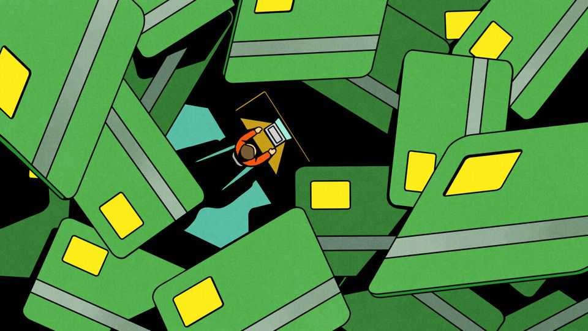

The AI boom meets a new kind of crypto scam
Payment cards linked to cryptocurrency accounts may enable Chinese purchases of American AI models

Oct 1st 2026
VENTURE CAPITALISTS are pouring so much money into artificial intelligence that little is left over for anything else. Some, though, retain a soft spot for an earlier mania: cryptocurrency finance. In the first half of this year crypto startups received $10bn in venture capital (VC) through nearly 750 deals. Besides using lots of computing power, AI and crypto have had little in common. But an investigation by The Economist suggests the two are tightly linked by a booming illicit trade.
Issuance of crypto-enabled credit and debit cards is surging. These cards connect crypto wallets to payment terminals used by ordinary businesses. They allow people in poor countries with unreliable currencies to transact in stablecoins pegged to sturdier foreign monies, notably the dollar. But crypto cards have other big customers, too. Many card providers do not seriously try to verify the identity of their cardholders. That has left them open to abuse by criminals and sanctions evaders. They also let people in places like China buy subscriptions to American frontier AI models, circumventing the model-builders’ restrictions on sales to America’s enemies.
Crypto cards convert digital currencies into real-world money when swiped at Visa and Mastercard terminals, and their use is growing. Although such cards can be linked to bitcoin, ether and other unstable coins, the volatility of unpegged cryptocurrencies makes them a poor means of exchange. Stablecoins, whose overall market value has nearly doubled in the past two years to over $300bn, are still mostly stores of value. But stablecoin cards were used in transactions worth more than $1.1bn in August, three times as much as a year earlier, according to Paymentscan, a data provider. The true figure is probably higher; many crypto-card providers do not report their transaction volume.
In the past couple of years regulators in America, Europe and Hong Kong have encouraged this growth by writing clearer rules for digital currencies. As a result, cryptocurrencies in general, and specifically stablecoins, have gained respectability. In particular, in an aggressive effort to capture a slice of the growing crypto economy, Visa and Mastercard have begun offering membership in their networks, hitherto mostly reserved for banks, to startup card-issuers with payments licences.
These issuers in turn lend their network access to providers of crypto cards. Among the largest of the issuers are Rain, Reap and Wirex. All three say they take their compliance responsibilities seriously. In January Rain raised $250m from VC funds, including big names like Iconiq and Lightspeed. The crypto providers sign up customers under their own brand. Between April and September the number of identifiable providers grew from around 100 to 250. The involvement of Visa and Mastercard enables the crypto providers to offer, via the issuers, cards carrying the two payments giants’ logos (as well as their own) that can be used anywhere in the world.
The spread of stablecoins worries regulators in poor countries, for it could lead to pseudo-dollarisation of their economies. But it should concern their rich-world peers, too. Stablecoins, notes Eswar Prasad of Cornell University, “create additional conduits for illicit financial transactions, both within and between countries”. Illicit crypto flows exceeded $158bn last year, estimates TRM Labs, an analytics firm.
For businesses that want to block certain customers, crypto cards can make it hard to verify who a cardholder is or where they are. Persian- and Russian-language sites, for example, advertise their own or third-party cards to, among others, Iranians and Russians, who are locked out of the Western financial system by sanctions against their countries. One Russian-language site boasts that the cards enable users to “pay for ChatGPT, Claude, Netflix, Spotify…and other international services”.
Like payment cards from digital “neobanks” such as Monzo or Revolut, crypto cards can in principle be issued only to verified customers who have gone through the usual know-your-customer (KYC) checks. In practice, however, the providers are not always assiduous. For some of them, weak KYC is a selling point.
A report in April by Crystal Intelligence, another analytics firm, found that nearly seven in ten crypto-card providers had weak KYC requirements or none at all. About half of the no-KYC providers identified by Crystal Intelligence were based in Hong Kong and a fifth in America. Others sell virtual cards, in some cases entirely legally, while being licensed in the Caucasus or Gulf countries, where KYC rules are weaker and less vigorously enforced.
It is possible that some of the firms advertise weak- or no-KYC cards but demand identity verification after a cardholder begins using one. Some can verify identities without asking for documentation. Many crypto-card providers enforce rules on their products and are not dodgy. A few even cap payments to vendors like Starlink, a satellite-internet firm, whose products are illicitly used by Russia’s armed forces and its shadow oil-tanker fleet.
But in some instances, Crystal Intelligence found, providers did not ask for identity information. In others no attempt was made to verify the information given. The Economist applied for a Visa card through a Russian-language channel on Telegram, a messaging app, that promised “no documents, no waiting and no long forms” and had it linked to an Apple Pay wallet in minutes. The provider is called CinCin, and did not clearly identify the card issuer it worked with. The card advertised monthly payment limits of $500,000. Visa says it follows the law everywhere and prohibits illegal activity on its network.
One growing use of crypto cards is to let Chinese users pay for access to American AI models and chatbots such as Claude and ChatGPT. Chinese social media are full of guides on how to circumvent American restrictions and a domestic ban on foreign AI. Mostly users pay money to a third-party “transfer station”, which purchases AI tokens (the chunks of data processed by models) in an unrestricted country and resells them to users in China. Other tutorials teach Chinese users to buy subscriptions directly from the labs, by purchasing fake identities or obscuring their whereabouts with crypto cards.
At least one online Chinese-language guide for dodging the American AI labs’ country restrictions advises users to apply for a Mastercard, from a provider in Dubai. Users in mainland China can employ a virtual private network to pretend to be in another country and pick an address in that country on Google Maps to get their card. Providers like the one in Dubai claim to do KYC. Yet in the Chinese tutorial video, the host reassures viewers that the provider does not attempt to verify if the address is real, as a bank might by asking for a utility bill. Mastercard says that it takes governance seriously and prohibits reloadable “no-KYC” cards on its network.
A source at an American crypto provider whose cards are issued by Rain says that each month he sees hundreds of users signing up for his firm’s Visa cards with Chinese-issued IDs with addresses outside China. In one instance, his firm observed a user with an IP address in Shenzhen, a city in southern China, and a Chinese ID apply for a card with a non-Chinese address; the user then spent $50,000 on ChatGPT subscriptions in the Bolivian Apple app store. Rain says it is investigating these reports.
Rain accepts Chinese IDs, since their holders could be residing abroad, but rejects users who apply with a Chinese address. Yet a number of providers which offer cards via Rain allow users who fail KYC checks by entering a Chinese address to give it another go, with one explicitly encouraging them to “try again with another address”. Rain says it maintains high standards for its compliance programme, takes seriously attempts to circumvent its controls and abides by all regulations.
Since late 2024 one Hong Kong-based crypto provider serving Chinese-speaking users, and tracked by Crystal Intelligence, has seen more than $355m in dollar stablecoins flow into its card-linked wallets and has processed 4,000 transactions. Some observers suspect that many of these transfers are used for wholesale purchases of AI tokens. “I would hazard a guess”, says the source at the American crypto provider, “that a substantial amount of the $1bn-a-month stablecoin card spend is funding the grey token market.”
On September 10th Anthropic accused Alibaba, a Chinese internet giant, of illicitly gaining access to the Claude model 151m times between May and July to train its own models in a process known as “distillation”. Anthropic alleges that to do so Alibaba used a pool of 5,000 Claude accounts, some paid for with virtual cards to hide its actions. Alibaba did not respond to a request for comment. ■